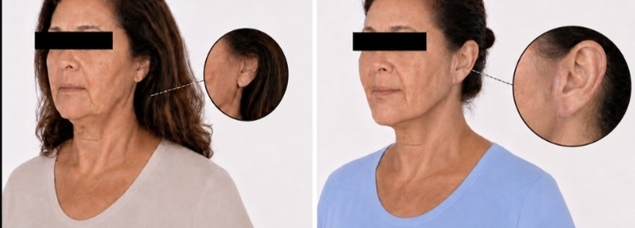

“Bochecha de buldogue”
Perda do contorno limpo da mandíbula, com tecido acumulado nas laterais do queixo — os chamados jowls.
Para quem sente que as bochechas cederam, a mandíbula perdeu definição ou o rosto parece cansado e triste sem representar a energia que existe por dentro. O objetivo não é “esticar”, mas avaliar o que realmente mudou e recuperar contornos preservando expressão e identidade.
Foco principal na face. A avaliação integra face, olhar e pescoço para entender a causa da queixa e decidir se cirurgia, tratamento complementar ou acompanhamento fazem sentido.
Consulta particular na Clínica LIV Faria Lima, em Pinheiros. A equipe informa agenda, formato e próximos passos pelo WhatsApp.

Expressões como “bochecha de buldogue”, “rosto derretido” e “cara triste” aparecem nas buscas porque traduzem mudanças percebidas no contorno e na expressão. Elas não definem diagnóstico: a mesma queixa pode envolver pele, gordura, ligamentos, volume e musculatura em proporções diferentes.
Perda do contorno limpo da mandíbula, com tecido acumulado nas laterais do queixo — os chamados jowls.
Sulcos ao redor da boca que podem contribuir para uma expressão percebida como pesada, triste ou cansada.
Sensação de que maçãs do rosto, bochechas e contorno mandibular cederam ao mesmo tempo.
Perda de volume que pode deixar têmporas e bochechas esvaziadas, com sobra de pele em alguns casos.
Quando o espelho transmite menos energia do que a pessoa sente, mesmo após descanso adequado.
Linhas finas ou em acordeão nas bochechas podem envolver qualidade de pele e movimento, não apenas flacidez estrutural.
Quem considera um lifting costuma querer naturalidade, previsibilidade e segurança. A consulta existe para transformar essas preocupações em um plano concreto — ou explicar por que ainda não é o momento de operar.
O planejamento busca reposicionar tecidos sem apagar traços, alterar a expressão ou criar um rosto padronizado.
Idade isolada não define indicação. O que importa é a anatomia, a intensidade da flacidez, a saúde e o que realmente incomoda.
A extensão do plano muda o cronograma. A avaliação organiza afastamento, apoio em casa, retorno social e compromissos importantes.
Você não precisa chegar sabendo se quer mini lifting, lifting completo ou associação de procedimentos. Chegar com uma queixa clara já é suficiente; a técnica é consequência do exame e dos seus objetivos.
Os relatos abaixo destacam três pontos decisivos para uma cirurgia facial: orientação honesta, clareza e acompanhamento próximo.
Relatos públicos sobre coerência, acolhimento, segurança e detalhismo.
Ver avaliações públicas“Fui com a intenção de realizar um procedimento específico, mas ela me orientou para uma opção mais adequada, respeitando minhas características e particularidades.”Ana Elisa D’AnnibaleAvaliação pública no Google
“Esclareceu todas as minhas dúvidas desde a primeira consulta até o pós-operatório, sempre muito profissional e humana.”Nicoli CadioliAvaliação pública no Google
“Ótima formação profissional, coerência, acolhimento e me passa segurança.”Raphaela GarofoAvaliação pública no Google
Em um resultado elegante, não se olha apenas para uma pele mais lisa. Observe a transição entre bochecha, mandíbula e pescoço, a harmonia do conjunto e a preservação da expressão.

Melhora do contorno do terço inferior e da transição com o pescoço, respeitando proporções e características pessoais.

Aparência mais descansada e melhor sustentação do conjunto, sem objetivo de padronizar ou transformar o rosto.

Mesmo caso em uma vista que permite observar a transição entre mandíbula e pescoço, além da região posterior da orelha.

Mesmo caso, visto de frente, com melhora individual do contorno inferior facial e cervical.
Imagens autorizadas, com finalidade educativa. Resultados variam conforme anatomia, indicação, técnica, cicatrização e cuidados pós-operatórios. Resultados insatisfatórios, intercorrências e complicações são possíveis; riscos específicos e eventual necessidade de revisão são discutidos na avaliação médica.

Graduada em Medicina pela UNICAMP, a Dra. Amanda realizou suas residências em Cirurgia Geral e Cirurgia Plástica na mesma instituição, complementando sua formação com pós-graduação em Cosmiatria pelo Hospital Albert Einstein. Essa base acadêmica permite uma abordagem integrada da face, distinguindo com precisão o envelhecimento cutâneo, a perda de volume e a flacidez estrutural. Sua prática clínica é marcada pela atualização científica contínua, tendo a cirurgia facial como principal foco de atuação.
O primeiro objetivo da consulta é esclarecer a indicação.
Não é preciso decidir pela cirurgia antes de conversar.
O lifting trata principalmente a queda dos tecidos e a perda de definição causada pela flacidez. Ele não substitui automaticamente tratamentos de pele, volume, pálpebras ou sobrancelhas.
O plano pode atuar em tecidos profundos, pele e contorno conforme a anatomia e a extensão necessária.
Manchas, poros e rugas finas podem pedir laser, resurfacing ou cuidados de pele em outro momento.
Blefaroplastia, tratamento cervical, reposição de volume ou procedimentos de pele são discutidos apenas quando acrescentam coerência ao resultado.
Nomes como “mini lifting” ou outras variações descrevem extensões e planos diferentes, mas não substituem a avaliação. A melhor técnica é a que trata a anatomia da paciente com segurança e cicatrizes proporcionais ao benefício esperado.

A Dra. Amanda examina a face em repouso e movimento, pescoço, pálpebras, pele, volumes, assimetrias e cicatrizes prévias. Também conversa sobre saúde, medicamentos, tabagismo, rotina, apoio em casa e o resultado que a paciente considera natural.
Pacientes de fora de São Paulo podem usar uma teleconsulta inicial em casos selecionados, mas vir à São Paulo é necessário para o tratamento definitivo.
Perguntar sobre a consultaPreservar identidade envolve escolher a extensão certa, respeitar proporções, distribuir tensão adequadamente e aceitar limites anatômicos.
O planejamento considera sustentação e tecidos profundos para evitar depender apenas de tração cutânea.
Tratar uma área ignorando a outra pode deixar uma transição pouco natural.
O objetivo é recuperar contornos sem mudar o formato fundamental do rosto.
Nem toda ruga deve desaparecer e nenhum resultado pode ser garantido.
A posição varia com a extensão do lifting. Em geral, as incisões acompanham a linha do cabelo e os contornos naturais ao redor da orelha, podendo seguir para trás da orelha e o couro cabeludo. Quando o pescoço precisa de abordagem adicional, pode haver uma pequena incisão sob o queixo.
As cicatrizes começam mais visíveis e amadurecem ao longo dos meses. Qualidade de pele, genética, tabagismo, tensão, cuidados e intercorrências influenciam o resultado; cicatrizes desfavoráveis são possíveis e são discutidas antes da cirurgia.
O planejamento combina seleção adequada da paciente, preparo clínico, ambiente hospitalar, anestesia, técnica e acompanhamento pós-operatório.
Exames e avaliações são definidos conforme idade, doenças, medicamentos, tabagismo e porte da cirurgia.
A cirurgia pode ser organizada em hospitais como Sírio-Libanês, São Luiz ou outras estruturas adequadas ao caso.
O tipo de anestesia e a permanência hospitalar dependem da extensão, associações e condições clínicas.
Orientações claras, retornos adaptados à evolução e canal para dúvidas durante a recuperação.
Diferencial da Clínica LIV: quando houver indicação, a avaliação cardiológica pré-operatória pode ser integrada na própria clínica, com Dr Daniel Added CRM 199104, Cardiologista da USP e Incor, facilitando a comunicação entre cirurgia plástica, cardiologia e anestesia.
Ver localizaçãoA cirurgia só avança depois que técnica, cicatrizes, associações, custos, hospital, preparo, recuperação e limites foram discutidos.
O que será tratado, preservado e associado.
Custos médicos, anestésicos e hospitalares conforme o plano.
Exames, fotografias, medicamentos, tabagismo, controle de doenças, rotina e apoio.
Hospital, anestesia e orientações definidos individualmente.
Retornos próximos e ajustes conforme a evolução.
Muitas pacientes se sentem apresentáveis em cerca de duas semanas, mas edema, sensibilidade, tensão e cicatrizes continuam evoluindo por meses. Associações e características individuais podem ampliar os prazos.
Edema e hematomas podem aumentar antes de regredir. É importante ter apoio, repouso relativo e seguir curativos, medicações e orientações.
Ainda pode haver inchaço, equimoses, dormência e sensação de tensão. Muitas pacientes retomam trabalho e atividades sociais leves ao final desse período.
O contorno fica mais perceptível e sinais externos costumam diminuir, embora edema residual e cicatrizes ainda estejam presentes.
Textura, sensibilidade e sensação de normalidade melhoram gradualmente. Cicatrizes e pequenos edemas continuam amadurecendo por vários meses.
Planeje com margem. Viagens, festas, fotografias e compromissos importantes não devem ser marcados contando apenas com o prazo mínimo. O cronograma individual é definido na consulta e ajustado durante os retornos.
As respostas abaixo são referências gerais. Técnica, riscos, anestesia, recuperação e cicatrizes só podem ser definidos após exame e avaliação clínica.
O objetivo não é modificar a identidade, mas reposicionar tecidos e recuperar contornos. Naturalidade depende da indicação correta, da extensão adequada e do respeito às proporções e aos limites de cada rosto.
Não há uma idade única. A indicação depende da flacidez, da anatomia, da saúde, do impacto da queixa e da disposição para uma recuperação cirúrgica. Há pacientes mais jovens com maior flacidez e pacientes mais velhas que ainda não precisam de cirurgia.
Nem sempre. Porém, face e pescoço precisam ser examinados juntos porque a perda do contorno mandibular frequentemente envolve as duas regiões. Tratar apenas uma área pode criar desarmonia em alguns casos.
Elas costumam acompanhar a linha do cabelo e os contornos naturais da orelha, com extensão variável para trás da orelha e o couro cabeludo. Pode haver incisão sob o queixo quando o pescoço exige abordagem adicional. O desenho exato é discutido na consulta.
Não é seu foco principal. O lifting atua na flacidez e no reposicionamento dos tecidos. Qualidade de pele pode exigir laser, resurfacing, peelings ou cuidados dermatológicos em outro momento.
Sim, quando a associação acrescenta benefício e continua segura. Pálpebras, sobrancelhas, pescoço, volume e pele são avaliados separadamente antes de decidir o que vale tratar no mesmo tempo cirúrgico.
A escolha pode envolver anestesia geral ou sedação, conforme extensão da cirurgia, associações, hospital e condições clínicas. A recomendação é definida em conjunto com a equipe anestésica.
Como referência, muitas pacientes se sentem apresentáveis para atividades leves em cerca de 10 a 14 dias. Edema, equimoses, dormência e sensação de tensão podem durar mais, e a face costuma levar dois a três meses para parecer e sentir-se mais próxima do normal.
O lifting pode produzir uma melhora duradoura, mas não interrompe o envelhecimento. Genética, exposição solar, tabagismo, variação de peso e cuidados com a pele influenciam a evolução ao longo dos anos.
Como em qualquer cirurgia, existem riscos anestésicos, sangramento ou hematoma, infecção, alterações de sensibilidade, cicatrização desfavorável, sofrimento de pele, assimetria, lesão nervosa, complicações trombóticas e necessidade de revisão. O risco individual depende da saúde, hábitos, medicamentos e extensão do procedimento.
Não é preciso enviar fotografias íntimas, histórico completo ou decidir a técnica pelo WhatsApp. Basta contar brevemente o que deseja avaliar para receber agenda, formato e orientações iniciais.
Face, mandíbula, pescoço, olhar ou uma dúvida ainda sem nome técnico.
Você recebe disponibilidade, formato e localização.
Exame, alternativas, cicatrizes, riscos, recuperação e próximos passos.
O primeiro passo é entender se o lifting realmente trata o que incomoda e como seria um plano seguro, proporcional e natural para o seu rosto.
A equipe informa disponibilidade e formato, sem compromisso de operar.